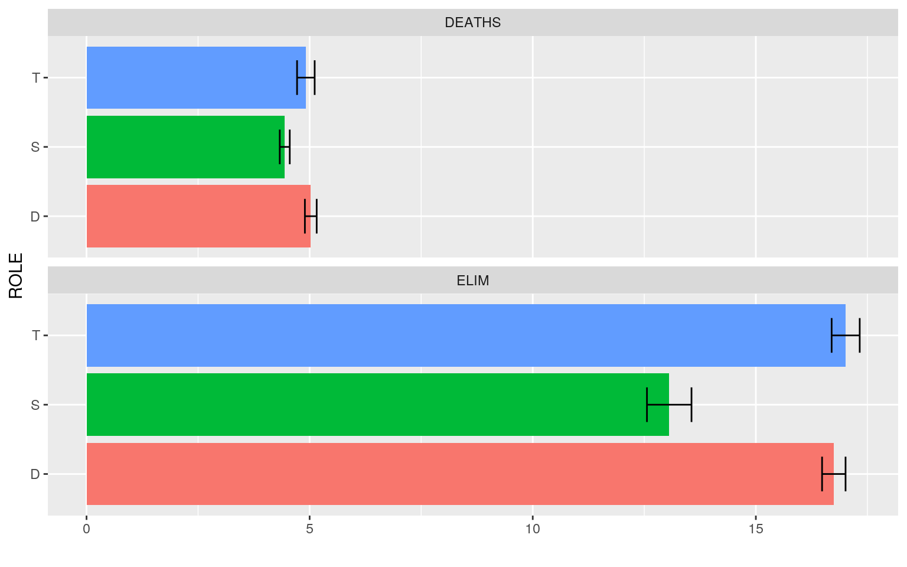
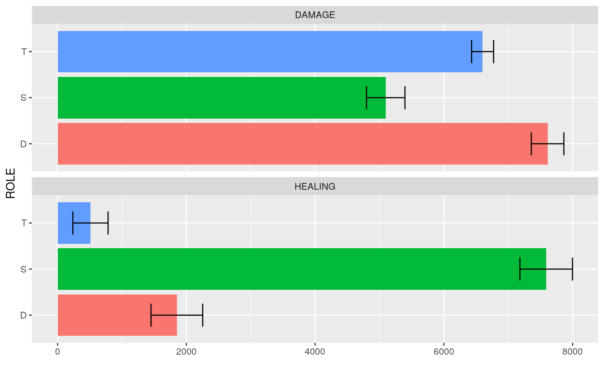
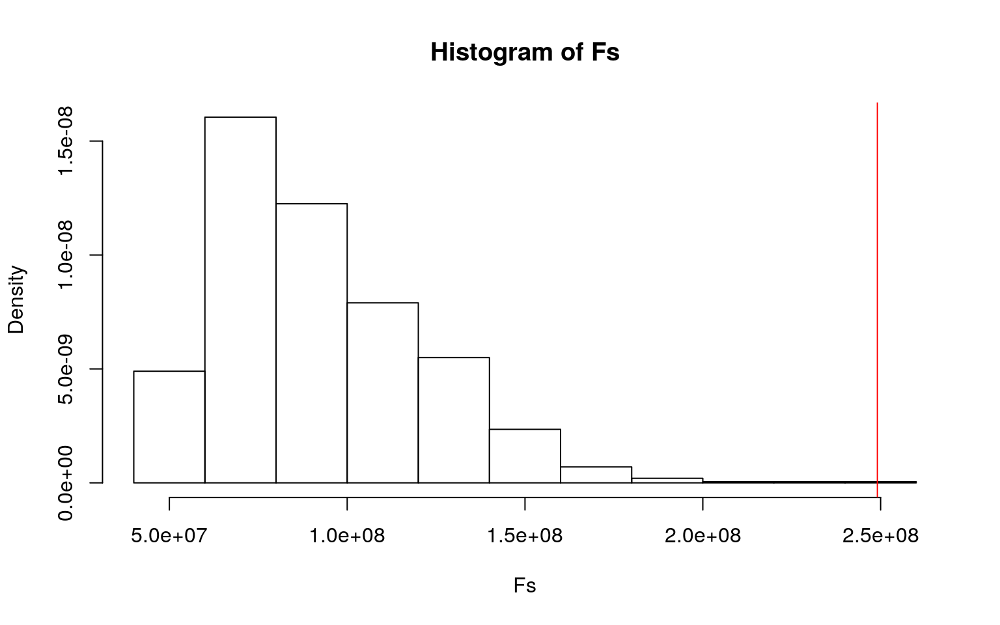
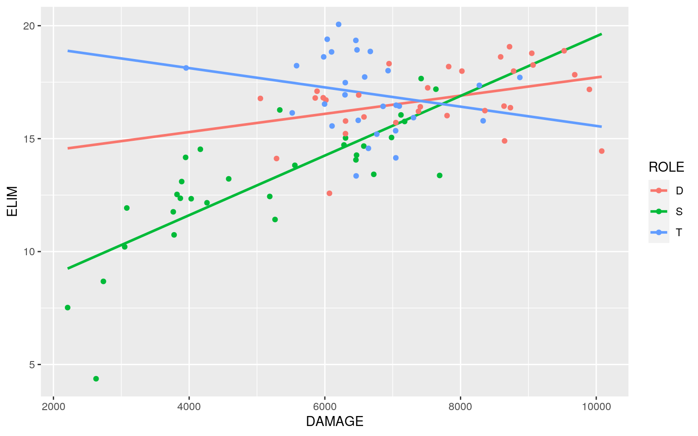
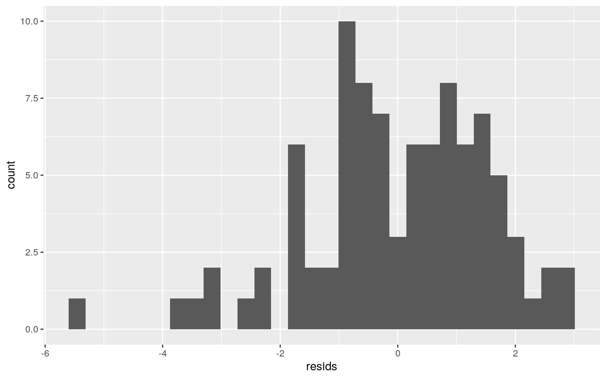
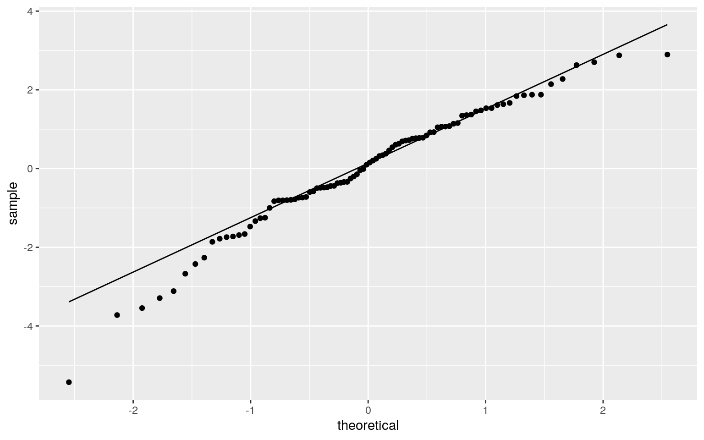
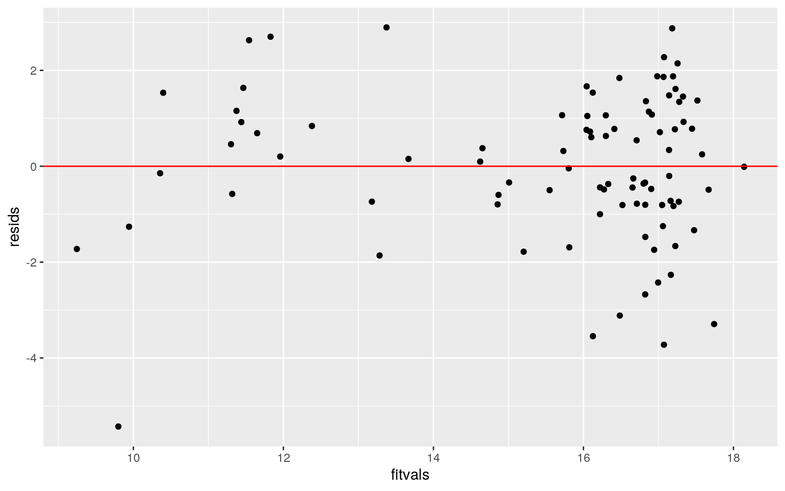
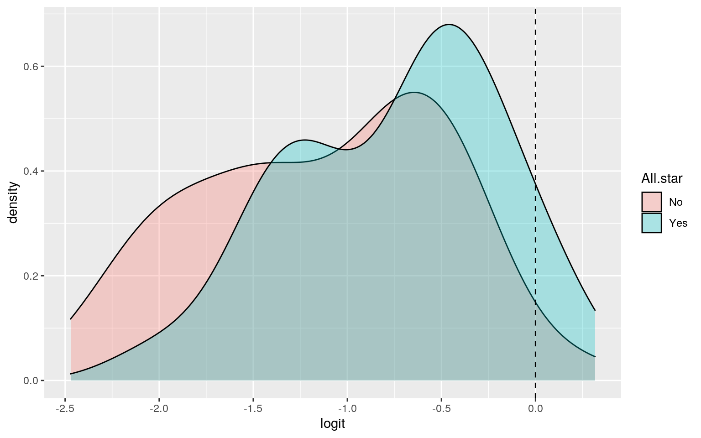
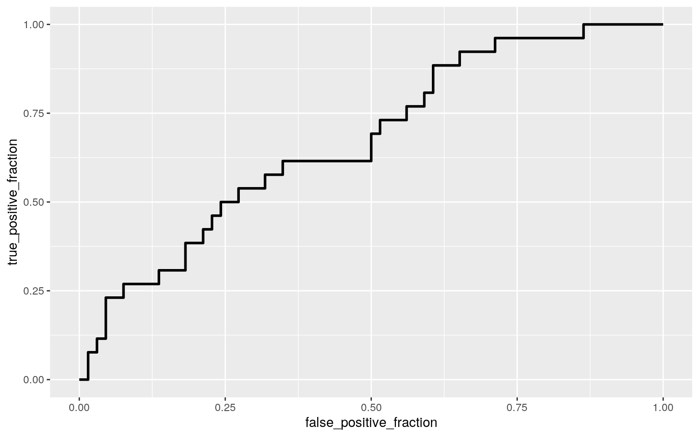

The dataset utilized in this project contains all of the recorded in-game statistics of the professional gamers in the Overwtch League (OWL) for the 2019 season. The variables recorded include personal information about the players such as their "gamer tag"/username and the city and team they play for. In addition, the dataset also includes infromation on the role/position that each player focuses on. These include the roles of "Tank", "Damage", and "Support". The statistics included in this dataset record the individuals average eliminations, deaths, damage done, and healing done per ten minutes. Finally miscelanous statistics are recorded such as time played and whether or not the individual made the "Overwatch All-star Team".
The statistical records for eliminations and deaths count how many eliminations and deaths the player procures in ten minutes. The statistical records for "damage done" and "healing done" are recorded based off of the "in-game" hp system. In total, there are 9 variables recorded for 92 professional Overwatch players.
library(tidyverse)
library(tidyr)
library(dplyr)
library(ggplot2)
library(cluster)
library(viridis)
library(GGally)
library(vegan)
library(sandwich)
library(lmtest)
library(plotROC)
library(glmnet)
library(rstatix)
set.seed(1234)
OWL_stats <- read.csv("~/Website/content/project/OWL_stats.csv")
OWL_stats <- OWL_stats %>% select(-PLAYER, -TEAM)# MANOVA
man1 <- manova(cbind(ELIM, DEATHS, DAMAGE, HEALING) ~ ROLE, data = OWL_stats)
summary(man1)## Df Pillai approx F num Df den Df Pr(>F)
## ROLE 2 0.95496 19.875 8 174 < 2.2e-16 ***
## Residuals 89
## ---
## Signif. codes: 0 '***' 0.001 '**' 0.01 '*' 0.05 '.' 0.1 ' ' 1# Univariate ANOVAs
summary.aov(man1) #all 4 variables are significant## Response ELIM :
## Df Sum Sq Mean Sq F value Pr(>F)
## ROLE 2 300.21 150.106 35.094 5.792e-12 ***
## Residuals 89 380.68 4.277
## ---
## Signif. codes: 0 '***' 0.001 '**' 0.01 '*' 0.05 '.' 0.1 ' ' 1
##
## Response DEATHS :
## Df Sum Sq Mean Sq F value Pr(>F)
## ROLE 2 5.985 2.99252 4.3933 0.01515 *
## Residuals 89 60.623 0.68116
## ---
## Signif. codes: 0 '***' 0.001 '**' 0.01 '*' 0.05 '.' 0.1 ' ' 1
##
## Response DAMAGE :
## Df Sum Sq Mean Sq F value Pr(>F)
## ROLE 2 100566884 50283442 26.309 1.054e-09 ***
## Residuals 89 170100704 1911244
## ---
## Signif. codes: 0 '***' 0.001 '**' 0.01 '*' 0.05 '.' 0.1 ' ' 1
##
## Response HEALING :
## Df Sum Sq Mean Sq F value Pr(>F)
## ROLE 2 862946602 431473301 102.13 < 2.2e-16 ***
## Residuals 89 376004653 4224771
## ---
## Signif. codes: 0 '***' 0.001 '**' 0.01 '*' 0.05 '.' 0.1 ' ' 1OWL_stats %>% group_by(ROLE) %>% summarize(mean(ELIM), mean(DEATHS),
mean(DAMAGE), mean(HEALING))## # A tibble: 3 x 5
## ROLE `mean(ELIM)` `mean(DEATHS)` `mean(DAMAGE)` `mean(HEALING)`
## <fct> <dbl> <dbl> <dbl> <dbl>
## 1 D 16.7 5.03 7611. 1852.
## 2 S 13.1 4.44 5097. 7590.
## 3 T 17.0 4.92 6602. 510.pairwise.t.test(OWL_stats$ELIM, OWL_stats$ROLE, p.adj = "none")##
## Pairwise comparisons using t tests with pooled SD
##
## data: OWL_stats$ELIM and OWL_stats$ROLE
##
## D S
## S 3.2e-10 -
## T 0.62 7.2e-11
##
## P value adjustment method: nonepairwise.t.test(OWL_stats$DEATHS, OWL_stats$ROLE, p.adj = "none")##
## Pairwise comparisons using t tests with pooled SD
##
## data: OWL_stats$DEATHS and OWL_stats$ROLE
##
## D S
## S 0.0062 -
## T 0.6031 0.0290
##
## P value adjustment method: nonepairwise.t.test(OWL_stats$DAMAGE, OWL_stats$ROLE, p.adj = "none")##
## Pairwise comparisons using t tests with pooled SD
##
## data: OWL_stats$DAMAGE and OWL_stats$ROLE
##
## D S
## S 1.7e-10 -
## T 0.0055 6.0e-05
##
## P value adjustment method: nonepairwise.t.test(OWL_stats$HEALING, OWL_stats$ROLE, p.adj = "none")##
## Pairwise comparisons using t tests with pooled SD
##
## data: OWL_stats$HEALING and OWL_stats$ROLE
##
## D S
## S <2e-16 -
## T 0.013 <2e-16
##
## P value adjustment method: none# Did 1 MANOVA, 4 ANOVAs, 12 t tests --> a = 0.05/17 =
# 0.002941176
0.05/17## [1] 0.002941176# plot for T-test
OWL_stats %>% select(ROLE, ELIM, DEATHS) %>% pivot_longer(-1,
names_to = "DV", values_to = "measure") %>% ggplot(aes(ROLE,
measure, fill = ROLE)) + geom_bar(stat = "summary") + geom_errorbar(stat = "summary",
width = 0.5) + facet_wrap(~DV, nrow = 2) + coord_flip() +
ylab("") + theme(legend.position = "none")
OWL_stats %>% select(ROLE, DAMAGE, HEALING) %>% pivot_longer(-1,
names_to = "DV", values_to = "measure") %>% ggplot(aes(ROLE,
measure, fill = ROLE)) + geom_bar(stat = "summary") + geom_errorbar(stat = "summary",
width = 0.5) + facet_wrap(~DV, nrow = 2) + coord_flip() +
ylab("") + theme(legend.position = "none")
# Assumption tests
group <- OWL_stats$ROLE
DVs <- OWL_stats %>% select(ELIM, DEATHS, DAMAGE, HEALING)
sapply(split(DVs, group), mshapiro_test)## D S T
## statistic 0.8984308 0.7392007 0.4539744
## p.value 0.00565029 4.650315e-06 2.66407e-09A one-way MANOVA was conducted to determine the effect of the Player Role (Tank,Damage,Support) on 4 dependent variables (Eliminations per ten minutes, Deaths per ten minutes, Damage per ten minutes, and Healing per ten minutes).
Significant differences were found among the three Player Roles for at least one of the dependent variables, Pillai trace = 0.95496, pseudo F (8,174) = 19.875, p = 2.2e-16.
Univariate ANOVAs for each dependent variable were conducted as follow-up tests to the MANOVA, using the Bonferroni method for controlling Type I error rates for multiple comparisons. The univariate ANOVAs for ELIM, DAMAGE, and HEALING were significant, F (2,89) = 35.094, p = 5.792e-12, F (2,89) = 26.309, p = 1.054e-09, and F (2,89) = 102.13, p = 2.2e-16 respectively. The univariate ANOVA for DEATHS was not significant, F (2,89) = 4.3933, p = 0.01515.
Post hoc analysis was performed conducting pairwise comparisons to determine which Role differed in Elims, Deaths, Damage, and Healing. All three Roles were found to differ significantly from each other in terms of sepal length and petal width after adjusting for multiple comparisons (bonferroni α = 0.05/17 = 0.002941176).
Assumptions for multivariate normality were violated due to p-value < 0.05; therefore, further assumption testing was halted
# Automatic
dists <- OWL_stats %>% select(ELIM, DEATHS, DAMAGE, HEALING) %>%
dist()
adonis(dists ~ ROLE, data = OWL_stats)##
## Call:
## adonis(formula = dists ~ ROLE, data = OWL_stats)
##
## Permutation: free
## Number of permutations: 999
##
## Terms added sequentially (first to last)
##
## Df SumsOfSqs MeanSqs F.Model R2 Pr(>F)
## ROLE 2 963513793 481756896 78.513 0.63825 0.001 ***
## Residuals 89 546105798 6136020 0.36175
## Total 91 1509619591 1.00000
## ---
## Signif. codes: 0 '***' 0.001 '**' 0.01 '*' 0.05 '.' 0.1 ' ' 1OWL_stats %>% filter(ROLE == "D") #32 Damage players## ROLE ELIM DEATHS DAMAGE HEALING TIME.PLAYED All.star
## 1 D 14.90 5.55 8649 168 27 No
## 2 D 16.44 4.81 8641 319 25 No
## 3 D 18.19 4.56 7825 3806 478 No
## 4 D 17.25 4.21 7516 406 1242 Yes
## 5 D 14.12 5.69 5288 5127 152 No
## 6 D 16.71 4.51 6016 4688 1199 No
## 7 D 17.99 4.85 8782 137 192 Yes
## 8 D 14.45 4.82 10081 0 8 No
## 9 D 19.07 4.78 8722 28 1372 Yes
## 10 D 18.26 4.86 9069 378 131 No
## 11 D 18.78 4.49 9050 149 1346 Yes
## 12 D 16.24 4.19 8359 1143 1401 No
## 13 D 15.96 4.46 6577 3561 622 No
## 14 D 17.83 4.00 9683 198 194 No
## 15 D 16.81 5.25 5976 6042 185 No
## 16 D 18.89 4.58 9527 263 1051 No
## 17 D 17.99 4.73 8020 2659 954 Yes
## 18 D 12.58 6.61 6068 5250 485 No
## 19 D 16.41 5.82 7407 1104 892 No
## 20 D 16.37 5.18 8735 194 1283 No
## 21 D 16.78 4.50 5050 5891 142 No
## 22 D 17.18 5.95 9899 727 1094 No
## 23 D 15.78 5.68 6305 3422 428 No
## 24 D 15.71 6.73 7046 1322 484 No
## 25 D 16.02 6.09 7801 402 511 No
## 26 D 18.32 4.35 6946 935 624 No
## 27 D 15.22 4.98 6304 450 66 No
## 28 D 16.93 5.70 6499 332 426 No
## 29 D 17.10 3.97 5885 818 411 No
## 30 D 16.80 4.48 5858 8276 262 No
## 31 D 18.62 4.39 8591 938 12 Yes
## 32 D 16.21 6.06 7380 140 102 NoOWL_stats %>% filter(ROLE == "S") #31 Support players## ROLE ELIM DEATHS DAMAGE HEALING TIME.PLAYED All.star
## 1 S 11.42 5.37 5266 7719 186 No
## 2 S 8.68 5.09 2736 5754 66 No
## 3 S 12.36 4.69 3870 6429 105 No
## 4 S 14.17 2.75 3948 6563 177 Yes
## 5 S 14.72 4.69 6282 9251 81 No
## 6 S 15.05 4.11 6983 8836 30 No
## 7 S 13.42 4.69 6721 9486 1081 No
## 8 S 15.03 5.04 6305 8955 1401 Yes
## 9 S 12.34 3.59 4030 5718 209 No
## 10 S 11.76 5.29 3766 5403 17 No
## 11 S 12.44 4.85 5188 7953 98 No
## 12 S 10.21 4.55 3050 6137 1395 No
## 13 S 14.67 4.52 6574 5889 1392 No
## 14 S 11.93 3.91 3081 6036 913 No
## 15 S 15.76 3.95 7176 8675 206 Yes
## 16 S 13.82 5.08 5558 8025 165 No
## 17 S 13.37 5.04 7692 10720 752 No
## 18 S 10.74 4.75 3778 12601 112 Yes
## 19 S 13.22 4.62 4583 6510 151 No
## 20 S 16.27 4.94 5336 10575 265 No
## 21 S 14.27 4.07 6467 10113 95 No
## 22 S 4.37 4.90 2628 5675 93 No
## 23 S 13.10 3.72 3890 6671 507 No
## 24 S 12.16 4.08 4263 6333 677 No
## 25 S 7.52 4.70 2209 7691 92 Yes
## 26 S 14.06 3.83 6458 8793 36 Yes
## 27 S 17.19 4.20 7637 10409 697 Yes
## 28 S 16.05 4.14 7122 9320 241 Yes
## 29 S 12.53 3.57 3821 6536 791 No
## 30 S 14.53 3.71 4165 5882 398 Yes
## 31 S 17.66 5.27 7419 628 408 NoOWL_stats %>% filter(ROLE == "T") #29 Tank players## ROLE ELIM DEATHS DAMAGE HEALING TIME.PLAYED All.star
## 1 T 16.48 6.21 7051 0 38 Yes
## 2 T 19.40 3.48 6035 302 423 No
## 3 T 15.56 6.57 6106 0 28 No
## 4 T 18.62 3.91 5983 477 668 No
## 5 T 13.35 6.44 6461 0 110 Yes
## 6 T 18.01 4.03 6932 111 74 No
## 7 T 18.23 4.38 5583 1047 338 No
## 8 T 15.93 4.92 7307 0 13 Yes
## 9 T 16.14 5.24 5519 7443 944 No
## 10 T 18.86 3.91 6670 231 71 Yes
## 11 T 15.81 5.76 6492 0 71 Yes
## 12 T 17.48 4.92 6301 199 211 No
## 13 T 14.15 6.15 7046 1 1426 No
## 14 T 17.71 5.48 8874 154 303 No
## 15 T 15.79 6.18 8333 3331 108 Yes
## 16 T 18.13 6.05 3955 0 8 No
## 17 T 20.06 3.39 6203 215 343 No
## 18 T 15.20 4.95 6766 0 49 No
## 19 T 14.57 5.99 6642 0 78 No
## 20 T 18.84 3.88 6099 220 1293 Yes
## 21 T 16.53 3.82 5996 214 182 Yes
## 22 T 16.43 5.23 6858 5 207 Yes
## 23 T 18.93 3.24 6474 235 29 No
## 24 T 16.44 5.60 7097 0 1140 No
## 25 T 15.35 5.69 7043 0 86 No
## 26 T 16.94 3.76 6297 349 1350 Yes
## 27 T 17.36 5.26 8277 5 196 Yes
## 28 T 17.73 4.93 6587 0 325 No
## 29 T 19.35 3.18 6457 250 1371 No# By Hand
SST <- sum(dists^2)/92
SSW <- OWL_stats %>% group_by(ROLE) %>% select(ROLE, ELIM, DEATHS,
DAMAGE, HEALING) %>% do(d = dist(.[2:3], "euclidean")) %>%
ungroup() %>% summarize(sum(d[[1]]^2)/32 + sum(d[[1]]^2)/31 +
sum(d[[1]]^2)/29) %>% pull
F_obs <- ((SST - SSW)/2)/(SSW/89)
Fs <- replicate(1000, {
new <- OWL_stats %>% mutate(ROLE = sample(ROLE))
SSW <- new %>% group_by(ROLE) %>% select(ROLE, ELIM, DEATHS,
DAMAGE, HEALING) %>% do(d = dist(.[2:3], "euclidean")) %>%
ungroup() %>% summarize(sum(d[[1]]^2)/32 + sum(d[[1]]^2)/31 +
sum(d[[1]]^2)/29) %>% pull
((SST - SSW)/2)/(SSW/89)
})
{
hist(Fs, prob = T)
abline(v = F_obs, col = "red", add = T)
}
mean(Fs > F_obs) #p-value very small: reject null hypothesis## [1] 0Null Hypothesis: All of the ROLEs have the same mean distance for their eliminations/10min, deaths/10min, damage/10min, and healing/10min. Althernative Hypothesis: All of the ROLEs do not have the same mean distance for their eliminations/10min, deaths/10min, damage/10min, and healing/10min.
We can reject the null hypothesis because none of our 1000 F statistics generated under the null hypothesis were bigger than our actual F statistic (78.513); therefore, the p-value is effectively 0.
fit <- lm(ELIM ~ DAMAGE * ROLE, data = OWL_stats)
summary(fit) #linear reg model##
## Call:
## lm(formula = ELIM ~ DAMAGE * ROLE, data = OWL_stats)
##
## Residuals:
## Min 1Q Median 3Q Max
## -5.4293 -0.7977 0.1245 1.0680 2.8955
##
## Coefficients:
## Estimate Std. Error t value Pr(>|t|)
## (Intercept) 13.6807793 1.5593476 8.773 1.42e-13 ***
## DAMAGE 0.0004029 0.0002015 2.000 0.048673 *
## ROLES -7.3510657 1.8224959 -4.034 0.000119 ***
## ROLET 6.1497689 2.6935146 2.283 0.024886 *
## DAMAGE:ROLES 0.0009173 0.0002677 3.427 0.000938 ***
## DAMAGE:ROLET -0.0008297 0.0003863 -2.148 0.034547 *
## ---
## Signif. codes: 0 '***' 0.001 '**' 0.01 '*' 0.05 '.' 0.1 ' ' 1
##
## Residual standard error: 1.605 on 86 degrees of freedom
## Multiple R-squared: 0.6747, Adjusted R-squared: 0.6558
## F-statistic: 35.67 on 5 and 86 DF, p-value: < 2.2e-16ggplot(OWL_stats, aes(DAMAGE, ELIM, color = ROLE)) + geom_smooth(method = "lm",
se = F, fullrange = T) + geom_point() The predictive value for eliminations for the reference group which in this case is gamers who play the role of "Damage" characters but also have zero "damge dealt" is 13.6807793 eliminations. For every one unit increase of damage done for "damage" role characters, the number of eliminations a player gets increases by 0.0004029 eliminations. Controlling for "damage dealt", gamers who play the role of support have 7.3510657 fewer eliminations than damage players. Controlling for "damage dealt", gamers who play the role of Tank have 6.1497689 more eliminations than damage players. For every unit of damage done, the numnber of eliminations increases by 0.0009173, for Support players specifically. For every unit of damage done, the numnber of eliminations decreases by 0.0008297, for Tank players specifically.
resids <- lm(ELIM ~ DAMAGE * ROLE, data = OWL_stats)$residuals
ggplot() + geom_histogram(aes(resids)) #normality Based on this graph, the assumption for normality was met.
ggplot() + geom_qq(aes(sample = resids)) + geom_qq_line(aes(sample = resids)) #linearity Based on this graph, the assumption for linearity was met.
resids <- fit$residuals
fitvals <- fit$fitted.values
ggplot() + geom_point(aes(fitvals, resids)) + geom_hline(yintercept = 0,
color = "red") #homoskedasticity
bptest(fit) #accept null which is that it is homoskedastic (p-value=0.4333)##
## studentized Breusch-Pagan test
##
## data: fit
## BP = 4.8595, df = 5, p-value = 0.4333Based on this graph, the assumption for homoskedasticity was met.
# uncorrected SE vs corrected SE
coeftest(fit)##
## t test of coefficients:
##
## Estimate Std. Error t value Pr(>|t|)
## (Intercept) 13.68077928 1.55934764 8.7734 1.424e-13 ***
## DAMAGE 0.00040289 0.00020146 1.9998 0.0486727 *
## ROLES -7.35106571 1.82249586 -4.0335 0.0001186 ***
## ROLET 6.14976888 2.69351465 2.2832 0.0248858 *
## DAMAGE:ROLES 0.00091734 0.00026766 3.4272 0.0009377 ***
## DAMAGE:ROLET -0.00082967 0.00038630 -2.1477 0.0345473 *
## ---
## Signif. codes: 0 '***' 0.001 '**' 0.01 '*' 0.05 '.' 0.1 ' ' 1coeftest(fit, vcov = vcovHC(fit))##
## t test of coefficients:
##
## Estimate Std. Error t value Pr(>|t|)
## (Intercept) 13.68077928 1.67202155 8.1822 2.263e-12 ***
## DAMAGE 0.00040289 0.00022189 1.8157 0.072900 .
## ROLES -7.35106571 2.20150312 -3.3391 0.001244 **
## ROLET 6.14976888 2.48280794 2.4769 0.015209 *
## DAMAGE:ROLES 0.00091734 0.00033323 2.7528 0.007206 **
## DAMAGE:ROLET -0.00082967 0.00035465 -2.3394 0.021633 *
## ---
## Signif. codes: 0 '***' 0.001 '**' 0.01 '*' 0.05 '.' 0.1 ' ' 1After recomputing with robust standard errors, there was an incease in the standard error values along with a decrease in p-values; thus, meaning that less variables were signifcant and that the variables that were significant went down in their level of significance. These larger standard errors make it more difficult to reject the null and accounts for extra noise.
# Proportion of variance explained
pro_var = lm(ELIM ~ DAMAGE * ROLE, data = OWL_stats)
summary(pro_var)$adj.r.squared## [1] 0.6557611The proportion of variance explained by my model can be found by using the adjusted r squared value. This yielded a proportion of 0.6557611
# bootstrapped SEs
samp_distn <- replicate(5000, {
boot_OWL_stats <- sample_frac(OWL_stats, replace = T)
fit <- lm(ELIM ~ DAMAGE * ROLE, data = boot_OWL_stats)
coef(fit)
})
samp_distn %>% t %>% as.data.frame %>% summarize_all(sd)## (Intercept) DAMAGE ROLES ROLET DAMAGE:ROLES DAMAGE:ROLET
## 1 1.590145 0.0002099108 2.072299 2.603343 0.0003119648 0.0003715443After bootstrapping the new standard errors, we can see that the standard error values are very similar to those of the uncorrected standard errors in section 3. However, due to the randomization nature of bootstrapping the values fluctuate above and below the uncorrected standard errors. Unbootstrapped (1.5593, 0.000201, 1.8225, 2.6935, 0.0002677, 0.000386) - Bootstrapped (1.590145 0.0002099108 2.072299 2.603343 0.0003119648 0.0003715443). On the other hand, the robust standard errors are all higher than these bootstrapped values, meaning that the p-values for the robust would also be higher. Robust (1.6720215, 0.00022189, 2.201503, 2.482808, 0.00033323, 0.00035465). Essentially, bootstrapping produces similar but not exactly the same standard errors, p-values, and consequently signifance findings as the uncorrected regression but these values are consistently lower than the values found using robust standard errors. Robust standard errors still have the lowest likelihood of producing a false positive.
# Interpret coefficient estimates
log_fit <- glm(All.star ~ DAMAGE + ROLE, family = "binomial",
data = OWL_stats)
coeftest(log_fit)##
## z test of coefficients:
##
## Estimate Std. Error z value Pr(>|z|)
## (Intercept) -4.29571143 1.58265201 -2.7142 0.006643 **
## DAMAGE 0.00036131 0.00018824 1.9194 0.054927 .
## ROLES 1.48839001 0.78207987 1.9031 0.057025 .
## ROLET 1.40591367 0.65591204 2.1434 0.032077 *
## ---
## Signif. codes: 0 '***' 0.001 '**' 0.01 '*' 0.05 '.' 0.1 ' ' 1exp(coef(log_fit))## (Intercept) DAMAGE ROLES ROLET
## 0.01362687 1.00036138 4.42995758 4.07925212# Confusion Matrix
probs <- predict(log_fit, type = "response")
table(predict = as.numeric(probs > 0.5), truth = OWL_stats$All.star) %>%
addmargins## truth
## predict No Yes Sum
## 0 65 24 89
## 1 1 2 3
## Sum 66 26 92The predictive odds of becoming an "All-star" for a player who choose the damage role and also has 0 "damage dealt" is 0.01362687 (p-value=0.006643). There is a significant difference in predicted odds of becoming an "All-star" comparing Tank to Damage players, once we've accounted for "Damage Dealt" (p-value=0.032077). These odds of becoming an "All-star" for Tank players are e^1.40591367 = 4.079252 times the odds of Damage players. There is a not significant difference in predicted odds of becoming an "All-star" comparing Support to Damage players, once we've accounted for "Damage Dealt" (p-value=0.057025). There is also no significant effect of "damage dealt" on becoming an "All-star" after controlling for the "Role".
# Compute and discuss the Accuracy,(TPR), (TNR), (PPV), and
# AUC of your model
class_diag(probs, OWL_stats$All.star)## acc sens spec ppv f1 auc
## Yes 0.7282609 0.07692308 0.9848485 0.6666667 0.137931 0.6730769The model preformed poorly as shown from an AUC value of 0.6730769. From the confusion matrix, we can determine that the accuracy is 0.7282609, the sensitivity is 0.07692308, the specificity is 0.9848485, the precision is 0.6666667, and the auc value is 0.6730769. Based on the low accurcay, sensitivy, precision, and auc values, the total classification is pretty poor, the true positive rate is low, the positivec predicted value is low, and the model overall is a poor predictor. However, the high specificity means that the true negative raite is high.
# ggplot of density plot of log-odds
logit_fit <- glm(All.star ~ DAMAGE + ROLE, data = OWL_stats,
family = binomial(link = "logit"))
OWL_stats$logit <- predict(logit_fit)
ggplot(data = OWL_stats, aes(logit, fill = All.star)) + geom_density(alpha = 0.3) +
geom_vline(xintercept = 0, lty = 2)
# generate a ROC curve
ROCplot <- ggplot(OWL_stats) + geom_roc(aes(d = All.star, m = probs),
n.cuts = 0)
ROCplot
calc_auc(ROCplot)## PANEL group AUC
## 1 1 -1 0.6730769An Ideal ROC plot resembles a sharp right angle; however, my ROC plot looks like a slight curve, thus, reflecting the low auc value of 0.6730769 and the poor predicitivity of the model.
# Fit model, compute in-sample classification diagnostics
# (Accuracy, Sensitivity, Specificity, Precision, AUC), and
# interpret
fit_all <- glm(All.star ~ ., data = OWL_stats, family = "binomial")
prob_all <- predict(fit_all, type = "response")
class_diag(prob_all, OWL_stats$All.star)## acc sens spec ppv f1 auc
## Yes 0.6956522 0.07692308 0.9393939 0.3333333 0.125 0.6818182The model preformed poorly as shown from an AUC value of 0.6818182 From the confusion matrix, we can determine that the accuracy is 0.6956522, the sensitivity is 0.07692308, the specificity is 0.9393939, the precision is 0.3333333, and the auc value is 0.6818182 Based on the low accurcay, sensitivy, precision, and auc values, the total classification is pretty poor, the true positive rate is low, the positivec predicted value is low, and the the model overall is a poor predictor. However, the high specificity means that the true negative raite is high.
# Perform 10-fold (or repeated random sub-sampling) CV with
# the same model and report average out-of-sample
# classification diagnostics (Accuracy, Sensitivity,
# Specificity, Precision, and AUC); interpret AUC and compare
# with the in-sample metrics
set.seed(1234)
k = 10
data <- OWL_stats[sample(nrow(OWL_stats)), ]
folds <- cut(seq(1:nrow(OWL_stats)), breaks = k, labels = F)
diags <- NULL
for (i in 1:k) {
train <- data[folds != i, ]
test <- data[folds == i, ]
truth <- test$All.star
fit2 <- glm(All.star ~ ., data = train, family = "binomial")
probs2 <- predict(fit2, newdata = test, type = "response")
diags <- rbind(diags, class_diag(probs2, truth))
}
summarize_all(diags, mean)## acc sens spec ppv f1 auc
## 1 0.5655556 NaN 0.7569048 NaN NaN 0.4625794The 10-fold CV model preformed poorly as shown from an AUC value of 0.5655556. We can determine that the accuracy is 0.6956522, the specificity is 0.7569048, and the auc value is 0.4625794 Based on the low accurcay, low specificity, and low auc, the total classification is pretty poor, the true negative raite is low, and the the model overall is a poor predictor.
# Perform LASSO on the same model/variables. Choose lambda to
# give the simplest model whose accuracy is near that of the
# best (i.e., lambda.1se). Discuss which variables are
# retained.
set.seed(1234)
y <- as.matrix(OWL_stats$All.star)
x <- model.matrix(All.star ~ ., data = OWL_stats)[, -1]
x <- scale(x)
cv <- cv.glmnet(x, y, family = "binomial")
lasso <- glmnet(x, y, family = "binomial", lambda = cv$lambda.1se)
coef(lasso)## 9 x 1 sparse Matrix of class "dgCMatrix"
## s0
## (Intercept) -0.9315582
## ROLES 0.0000000
## ROLET .
## ELIM .
## DEATHS .
## DAMAGE .
## HEALING .
## TIME.PLAYED .
## logit .OWL_stats2 <- OWL_stats %>% mutate(ROLES = ifelse(All.star ==
"S", 1, 0)) %>% select(All.star, ROLES)Based off of the Lasso for this model, the variables that were retained are Intercept and ROLES.
# Perform 10-fold CV using only the variables lasso selected:
# compare model’s out-of-sample AUC to that of your logistic
# regressions above
set.seed(1234)
k = 10
data2 <- OWL_stats2[sample(nrow(OWL_stats2)), ]
folds <- cut(seq(1:nrow(OWL_stats2)), breaks = k, labels = F)
diags <- NULL
for (i in 1:k) {
train <- data2[folds != i, ]
test <- data2[folds == i, ]
truth <- test$All.star
fit3 <- glm(All.star ~ ROLES, data = train, family = "binomial")
probs <- predict(fit3, newdata = test, type = "response")
diags <- rbind(diags, class_diag(probs, truth))
}
summarize_all(diags, mean)## acc sens spec ppv f1 auc
## 1 0.7166667 NaN 1 NaN NaN 0.45The new 10-fold CV Lasso model preformed poorly as shown from an AUC value of 0.45 We can determine that the accuracy is 0.7166667 and the specificity is 1. Based on the low accurcay and the low auc the total classification is pretty poor and the model overall is a poor predictor. However, the high specificity means that the true negative raite is high. The 10-fold CV Lasso model has a lower overall auc but a higher acc and specificity. This means that the 10-fold CV Lasso is an overall worse predictor than the non-Lasso but it does have a higher total classification and a higher true negative raite.